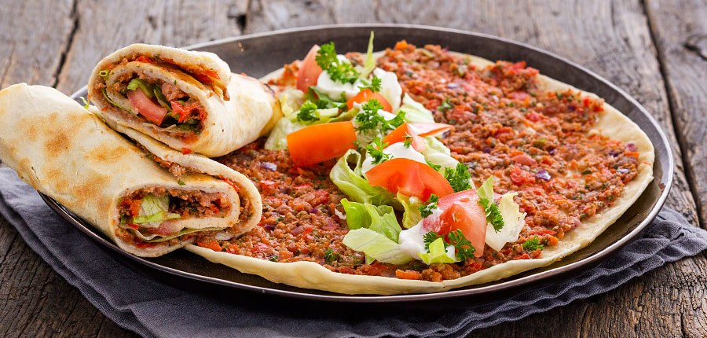

Turkse Pizza / Lahmacun
Beschrijving
Een mengsel van gehakt, tomaten, uien en een scala aan kruiden zoals komijn en koriander.
Ingrediënten
Deeg voor bodem:
- 50 gr bloem (en extra om te bestuiven)
- 0.1 zakje instant gist (3,5 gr)
- 0.2 theelepel zout
- 15 ml melk
- 15 ml water
- 3 gr margarine (voor op brood)
Gehaktmengsel
- 30 gr lamsgehakt of rundergehakt
- 0.2 paprika
- 0.2 tomaat
- 0.2 rode ui
- Bosje verse peterselie
- 0.2 eetlepel tomatenpuree
- 0.1 rode peper
- 0.2 theelepel paprikapoeder
- 0.2 eetlepel zonnebloemolie
- 10 ml water
- peper en zout
Toppings
- tomaten
- ijsbergsla
- yoghurt (of knoflooksaus)
Instructies
- Meng alle ingrediënten voor het deeg door elkaar in een kom.
- Kneed met het je handen tot een deegbal. Dek de kom af met een stuk plastic of een doek.
- Laat het deeg 45 min rijzen op kamertemperatuur. Zelf zet ik het altijd in de oven op 30 tot 35 graden.
- Maak ondertussen het gehaktmengsel: snijd de tomaat in stukken en doe in een keukenmachine of blender.
- Verwijder de steel en zaadlijsten van de paprika en rode peper en voeg ook samen met de rode ui in stukjes toe aan de tomaat. Doe het bosje peterselie ook in de keukenmachine. Maal het groentemengsel fijn.
- Schep het groentemengsel door het gehakt. Voeg de tomatenpuree, zonnebloemolie, paprikapoeder, water en peper en zout toe en meng goed door elkaar. Druk het gehakt met een lepel of vork wat fijn zodat er geen grote stukken meer in zitten.
- Verdeel het deeg in 5 bolletjes. Neem een bolletje en dek de rest af.
- Rol het bolletje heel dun uit op een met bloem bestoven werkvlak.
- Het beste is om een pizzapan of grillplaat te gebruiken maar deze heb ik helaas niet, daarom bakte ik de pizza's in een koekenpan.
- Verhit een koekenpan zonder olie of boter. Leg het uitgerolde deeg in de koekenpan en besmeer de bovenzijde direct met het gehaktmengsel. Dek de pan af met een deksel.
- Bak de turkse pizza ca. 5 min per stuk. Beweeg af en toe even met de pan zodat de pizza niet vast komt te zitten.
- Check altijd even of het gehakt bovenop goed gaar is geworden en probeer de bodem niet al te hard te laten worden omdat je ze later nog wilt oprollen. Leg de pizza’s die klaar zijn onder een deksel of schone theedoek, door de condens blijft de bodem ook zacht.
- Snijd de ingrediënten voor de toppings fijn en verdeel over de pizza’s. Rol ze op en dip ze in yoghurt of knoflooksaus.
- Tips: Je kunt ze ook 8 minuten op 220° graden in de oven bereiden, maar dan ben je zeker van een harde bodem. Als je ze niet oprolt, is dit ook lekker.
- Voor een snelle variant kun je de bodem ook vervangen door een wrap.
- Ook lekker om met vegetarisch gehakt te maken.